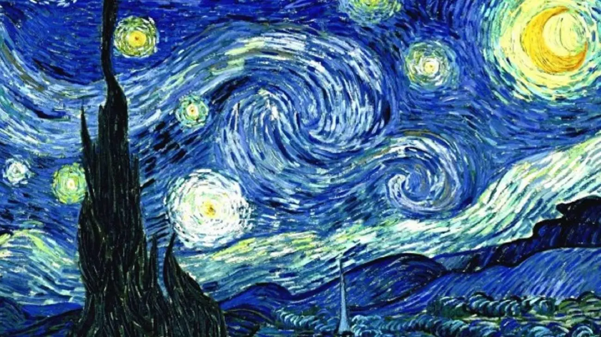
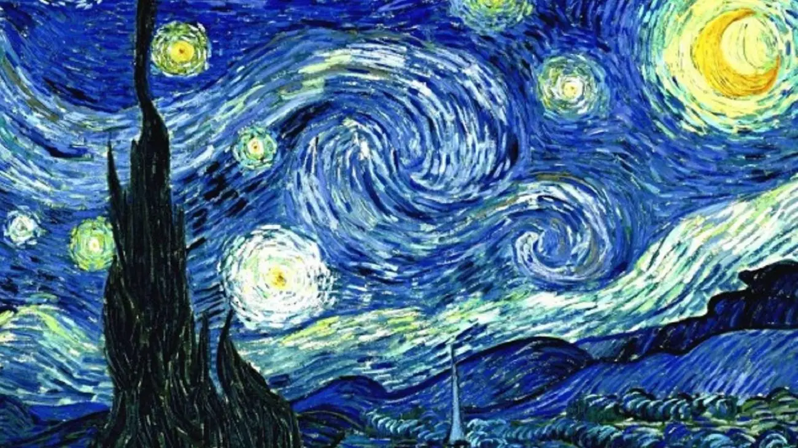

A cultura holandesa é marcada pela arte, arquitetura e tradições. Artistas como Rembrandt e Van Gogh são mundialmente famosos. Além disso, a Holanda é conhecida por suas festas populares e culinária única.
A cultura holandesa é marcada pela arte, arquitetura e tradições. Artistas como Rembrandt e Van Gogh são mundialmente famosos. Além disso, a Holanda é conhecida por suas festas populares e culinária única.
O dia do Rei é uma celebração nacional que marca o aniversário do monarca holandês. Atualmente, a data comemora o nascimento do Rei Willem-Alexander. É um dos dias mais animados e coloridos do calendário holandês!
O dia a dia de um nativo é acordar cedo, dar café de manhã para as crianças, colocá-las na bike, deixar na escola e voar com sua bicicleta para o trabalho. Tudo cronometrado, porque se as crianças atrasarem, a diretoria liga, pra perguntar, o por quê a criança não foi à escola! A hora do almoço é feita no trabalho, eles possuem um hábito de comer pão com queijo, tomar litros de café, bebem bastante água e levam saladas já prontas do supermercado.
Existem mais bicicletas que pessoas na Holanda. Além disso, há mais de 29.000 km de ciclovias. Basicamente dá para ir a qualquer lugar de bicicleta, inclusive viajar. Segundo o site oficial I Amsterdam, só na capital há 881.000 bikes.